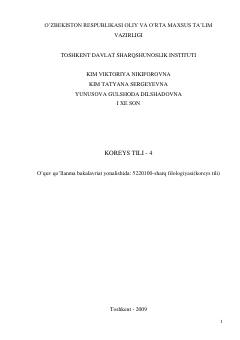

KTKoreys tilini o'rganuvchilar uchun mo'ljallangan to'rtinchi bosqich o'quv qo'llanmasi.
Mazkur o'quv qo'llanma koreys tilini o'rganayotgan o'zbek guruhlari talabalari uchun mo'ljallangan to'rtinchi kitobdir. Darslik 20 ta darsdan iborat bo'lib, grammatika, leksika, mashqlar hamda koreys madaniyati va tarixi haqidagi matnlarni o'z ichiga oladi.